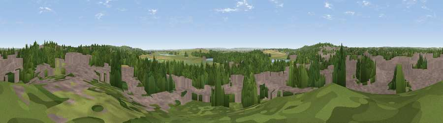

Viewpoint near Vange
#25199 in England · top 27% of its area beats it · near VangeWhere it is
The exact computed spot (TQ 73875 87775). Click the marker for map links.
The view, rendered

A 360° render of this exact spot computed from the terrain model, tree cover and land cover — summer colours, afternoon light, calibrated against photographs of famous viewpoints. Real trees, hedges and buildings will differ in detail.
The panorama
Grey silhouette: terrain skyline in each direction (720 bearings, Earth curvature and refraction included). Dashed green: skyline with trees (+15 m) and buildings (+8 m) as obstacles. Blue strip: how far the ground is visible on each bearing.
Where the view opens
Wedge length = distance to the farthest visible ground on that bearing (vegetation-aware). Rings at 10, 25 and 50 km.
What fills the view
45% built-up · 30% woodland · 21% grassland · 3% cropland · 1% wetland ·
Angular shares of the visible panorama (visual magnitude), not map area. Landscape diversity 0.53 (0–1 Shannon).
Key numbers
More beautiful places nearby
The staircase of upgrades: each row has a higher view potential than everything closer. Driving times are estimates from straight-line distance, calibrated against real road routing — check an actual route before setting out.
| Place | Direction | Drive | Score |
|---|---|---|---|
| Viewpoint near Vange | W · 2 km | ~6 min | 58.2 |
| Viewpoint near South Benfleet | ESE · 5 km | ~11 min | 62.9 |
| Viewpoint near Burham | S · 25 km | ~40 min | 63.1 |
| Bluebell Hill | S · 26 km | ~41 min | 64.8 |
| Viewpoint near Birling | SSW · 26 km | ~42 min | 65.2 |
| Viewpoint near Boxley | S · 28 km | ~44 min | 68.6 |
| Viewpoint near Shipbourne | SSW · 39 km | ~58 min | 69.1 |
| Viewpoint near Westwell | SSE · 46 km | ~67 min | 72.2 |
51.56205, 0.50706 · source: screening · position refined by local search. Computed location — check access rights before visiting.